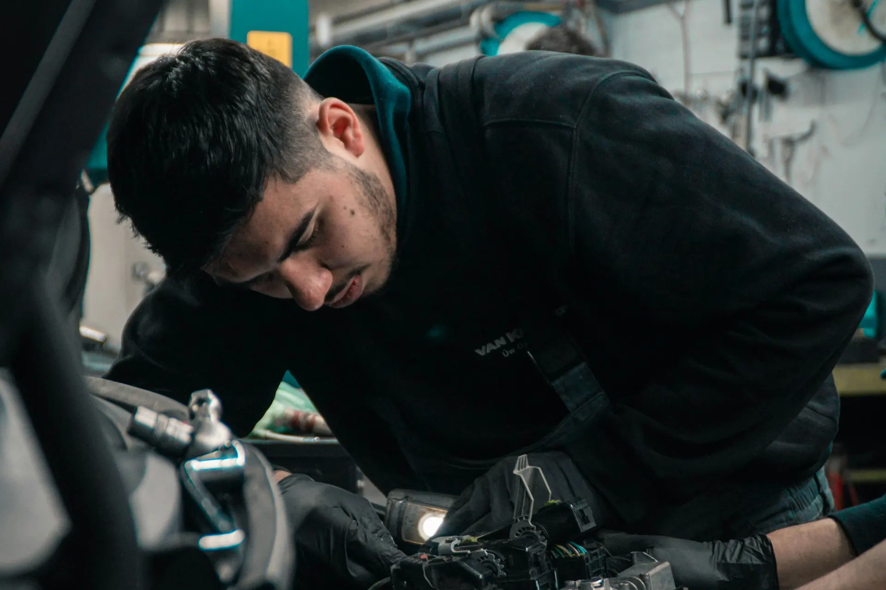
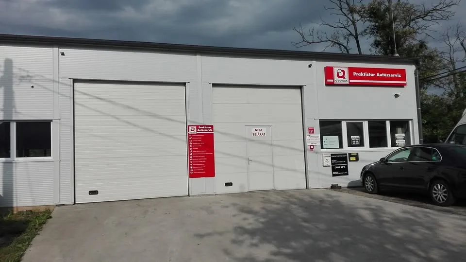

Szerviz és olajcsere
Időszakos karbantartás, olaj- és szűrőcsere, folyadékok ellenőrzése.

Autójavítás és szerviz a pécsi Iparszigeten, hétköznap 8:00–16:30. Ügyfeleink szerint gyorsan, szakszerűen és megbízhatóan.
4,7 csillag59 Google-vélemény
H–P 8:00–16:30hétvégén zárva
Két szerelőkapucsarnok az Iparszigeten
Q-Service műhelya hálózat tábláját viseli
Személyautók javítása és karbantartása, egy helyen. Ha nem biztos benne, mi a baj, hívjon, és elmondjuk, mivel érdemes behozni.
Időszakos karbantartás, olaj- és szűrőcsere, folyadékok ellenőrzése.
Fékbetét- és féktárcsacsere, lengéscsillapítók, futóműalkatrészek.
Számítógépes diagnosztika, ha kigyullad egy lámpa vagy furcsán viselkedik az autó.
Motor, kipufogó, hűtés és egyéb mechanikai javítások.
Átnézzük az autót a műszaki vizsga előtt, hogy ne érje meglepetés.
A javítás előtt elmondjuk, mi a teendő és mennyibe kerül.
Elmondja, mi a gond, és egyeztetünk egy időpontot.
Az autót nyitáskor, 8 órától hozhatja az Iparsziget u. 15.-be.
Ha kész, szólunk; 16:30-ig átveheti.

Fehér csarnok két szerelőkapuval, a Q-Service hálózat tábláival. A tulajdonos, Vavika Tibor műhelyében rendezték 2018-ban az Autótechnika Országos Tanulmányi Verseny pécsi középdöntőjét is.
Három téma, ami a Google-véleményekben visszajön – a vásárlók saját szavaival.
„Remek szerelők! Igazán igényes műhely. Laikus szemmel nagyon jól felszerelt.”Google-vélemény
„Korrekt árak! Gyors és kiváló munka!!!”Google-vélemény
„Az autóm minden alkalommal kifogástalan állapotban kerül vissza hozzám.”Google-vélemény egy régóta visszajáró ügyféltől
Más kérdés? Hívjon nyitvatartási időben: +36 30 642 0645.
Hétfőtől péntekig 8:00 és 16:30 között, hétvégén zárva.
Pécsen, az Iparszigeten: 7630 Pécs, Iparsziget u. 15. Keresse a fehér csarnokot a piros Praktistar Autószerviz táblával.
Hívja a +36 30 642 0645-ös számot nyitvatartási időben, vagy kérjen visszahívást az oldal tetején.
A Google-on 59 vélemény alapján 4,7 csillagos. Visszatérő témák: igényes, jól felszerelt műhely, korrekt árak, gyors és szakszerű munka.
Praktistar Autószerviz
7630 Pécs, Iparsziget u. 15.
Hétfő–péntek: 8:00–16:30
Szombat–vasárnap: zárva